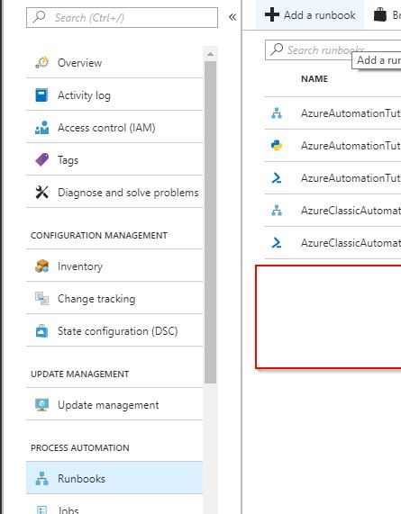

Preperation
In order to deposit and execute the Runbook in Azure some steps are necessary.
These steps are listed in this documentation.
Preparing Azure
Log in into your Azure subscription and create a new automation account.

In the new account select the area Runbooks and create a new Runbook.

In the Settings area import the RM-Runbook.

To use the Runbook automatically you have to publish it as follows:
Select the new Runbook
Select the possibility to edit
* Publish the Runbook
Runbook Credentials
The runbook requires special credentials for the target SQL Server, IIS and the target VM.
The credentials are stored in your automation account as follows

Preparing the Azure-VM
Select or create your VM and check the DNS Name field in the Overview area.
If no DNS name has been maintained, create a new DNS name using the link specified there.

Select the Networking area and maintain a new inbound port rule with the following settings.

| Name of the setting | Value |
|---|---|
| Name | WinRM |
| Destination port ranges | 5986 |
| Protocol | TCP |
Preparation on the VM
So that the Runbook can execute actions on the target VM, you must also configure settings on this VM.
This can be done using a script or manual Powershell commands.
Execute automatically
Access the VM as administrator and Download the preparation script. Then execute the script as administrator.
Note:Use as DNS name the the in Azure-VM Overview specified DNS Names.
Execute manually (Powershell)
Access the VM as an administrator and open up Powershell as Administrator. Then execute the following commands.
Self-signed certificate:
New-SelfSignedCertificate -DnsName "DNS_NAME" -CertStoreLocation Cert:\LocalMachine\My
WinRM Listener
winrm create winrm/config/Listener?Address=*+Transport=HTTPS '@{Hostname="DNS_NAME"; CertificateThumbprint="CERTIFICATE_THUMBPRINT"}'
WinRM Firewall rule
New-NetFirewallRule -DisplayName 'WinRM HTTPS' -Profile @('Domain', 'Private', 'Public') -Direction Inbound -Action Allow -Protocol TCP -LocalPort @('5986')
Note:Use as DNS name the the in Azure-VM Overview specified DNS Names.
As Thumbprint use the Thumbprint of your self-signed certificate.
After everything has been set up, webhooks or time controls can be set up for the Runbook.
Runbook Variables
The runbook requires some variables. These are stored in the created automation account in the Variables area.

The following variables must be maintained |Name|Type|Description| |---|---|---| |TargetDir|String|The folder name in which the installation files are stored.| |DNS Name|String|Use as DNS name the the in Azure-VM Overview specified DNS Names.| |SQLCredentialName|String|The name of your automation credentials to the SQL-Server.| |IISCredentialName|String|The name of your automation credentials to the IIS.| |VMCredentialName|String|The name of your automation credentials to the VM.| |Install-PS URI|String|The FTP URL to your Installation Powershell.| |SourcePath|String|The URL to your installation package.| |InstallDirectory|String|The Installatrions location of your Symbio application. E.g. C:\Symbio. Note the double! backslash| |SymbioName|String|The name of the Symbio instance. This name is used as a subfolder in the backup and destination path.| |SymbioLicenseKey|String|The license key for Symbio will be provided by our team. This license key will be added to the registry. Please also refer to server settings/license key chapter.| |SQLServer|String|The SQL Server for your Symbio application.| |SQLDatabase|String|The name of the database for your Symbio application| |SQLElasticPool|String|The name of the Elastic Pool for your Symbio application| |IISSite|String|Name of the WebSite in IIS. Can be left blank if IISSite is equal to SymbioName.| |IISAppPool|String|Name of application pool. Should be identical named like the Symbio WebSite.| |IISHostName|String|The HostName for you Symbio application. Can be left blank if IISHostName is equal to SymbioName.| |IISCertificateHash|String|The thumbprint of the SSL certificate for your Symbio application.|
Description of the Runbooks
The Runbook creates a remote session based on the given credentials and the DNS name.
This session is used to perform the following actions with PowershellThe target directory is checked and created if necessary.
The installation files are downloaded to the VM using the FTP URL.
After the Symbio installation files have been downloaded, the installation script is executed.